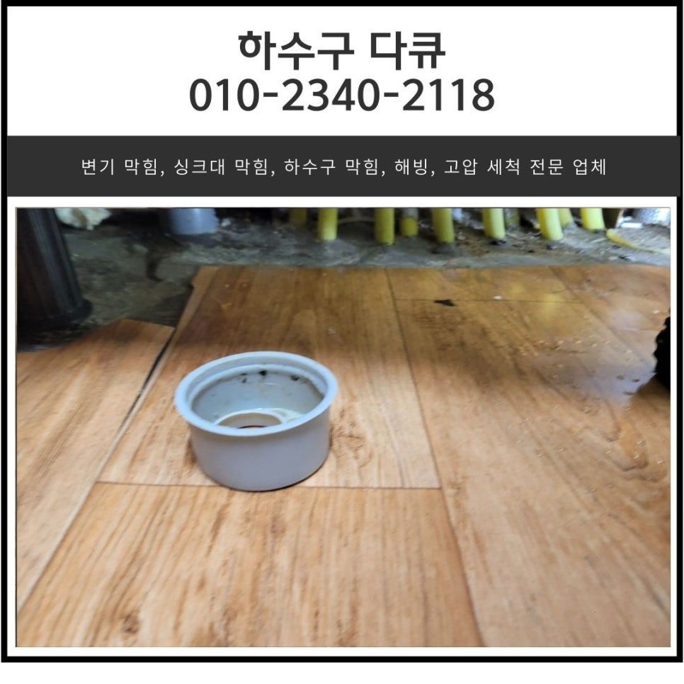
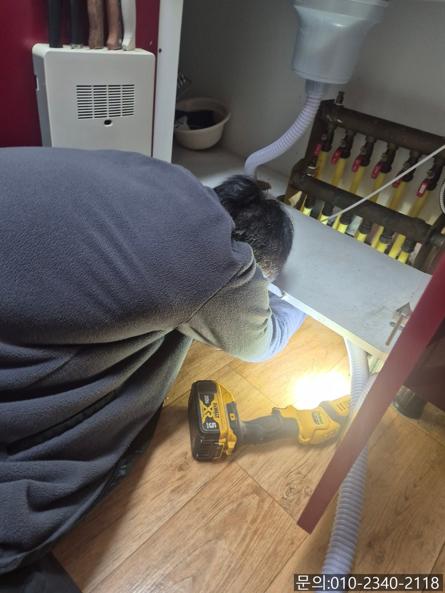
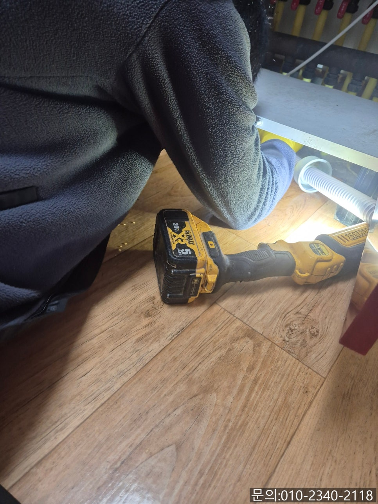
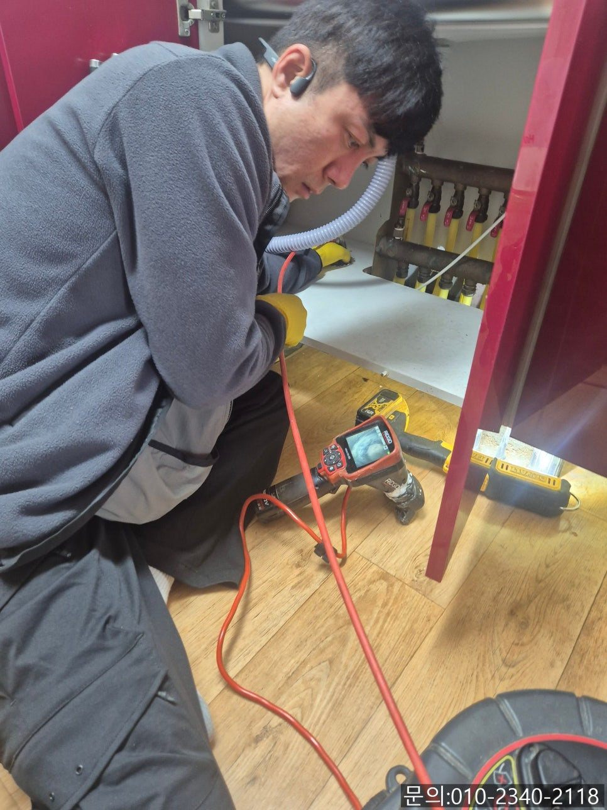
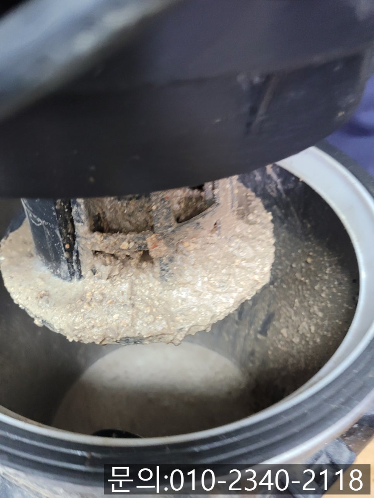
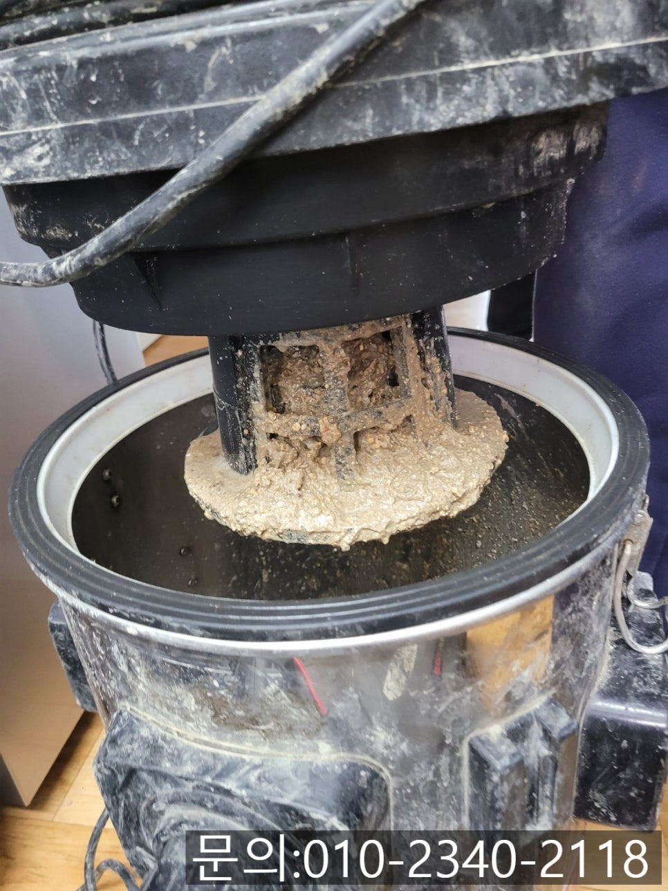
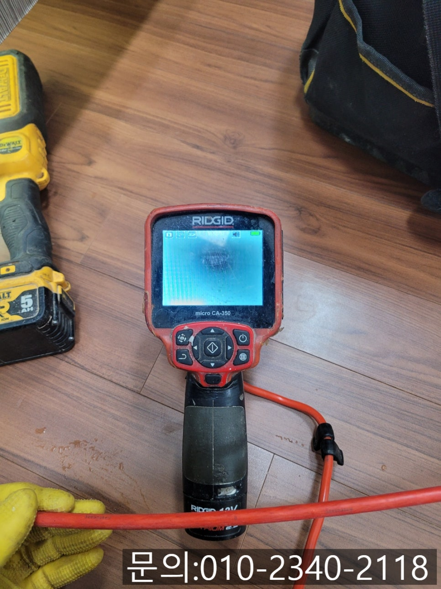

🏠 금광동 싱크대 막힘 성남동 아파트 하수구 역류할 때 뚫어주는 곳곳
성남 남동 싱크대막힘 전문 시공 후기

📋 작업 개요
- 위치: 성남 남동, 남동, 성남
- 서비스 유형: 싱크대막힘, 하수구막힘, 배관막힘, 역류해결, 뚫는업체, 배관청소, 고압세척
- 작업 일시: 2025. 5. 6. 10:21
- 업체명: 하수구수사대 (010-5615-2118)
🔍 문제 상황
안녕하세요.
금광동 싱크대 막힘, 성남동 아파트 하수구 역류할 때 뚫어주는 업체 하수구 다큐입니다.
금광동 싱크대 막힘이 발생하게 되면 물이 잘 안 내려가거나 심한 경우 거꾸로 역류까지 하는데요.
이런 물 막힘 현상이 발생하게 되면 답답하고 속상하시죠?
생각지도 못했던 아파트 하수구 역류에 이걸 어떻게 해결해야 하나, 청소는 어떻게 하지? 여러 가지 걱정으로 눈앞이 캄캄해지실 거예요.
금광동 싱크대 막힘은 하루아침에 발생하는 문제가 아니에요.
대부분 물 내려가는 속도가 느려진다거나, 물이 내려갈 때 평소와 다른 소리가 나는 등 싱크대에서 평소와 다른 점이 있었겠지만 아마도 대수롭지 않게 생각하고 넘어가셨을 겁니다.
이렇게 금광동 싱크대 막힘이 발생했을 때 하수구 다큐로 연락해 주세요!

🔎 원인 분석
💡 전문가 진단: 정밀 진단 장비를 사용하여 슬러지의 고착 여부를 판명하고 타격/세척 작업을 실시했습니다.
성남동 아파트 하수구 역류할 때 뚫어주는 곳 하수구 다큐는 배관 막힘으로 불편함을 겪으시는 분들을 위해 직접 방문해 무료견적도 진행해 드리고 있고, 정확한 원인을 찾아 시원하게 뚫어드리고 있답니다.
막힌 배관을 점검하고 뚫을 때 필요한 배관 내시경 카메라는 기본이고, 플렉스 샤프트, 석션, 고압세척 장비 등 배관을 뚫기 위한 전문적인 장비까지 모두 갖추고 있어 어떤 현장이던 직접 해결해드릴 수 있어요.
그리고 고객님들께서 가장 궁금해하시는 하수구 뚫는 비용의 경우, 막히는 곳의 위치나 이물질 등에 따라 작업하는 방법이 다르다 보니 정확한 금액을 안내해 드리기가 어려운 점 양해 부탁드리고요.
무료견적 신청을 하시면 정확하게 원인을 파악하고 안내해 드리겠습니다.
오늘은 얼마 전 성남동 아파트 하수구 역류로 연락을 받고 다녀온 현장을 소개해 드릴게요.
오랜만에 봄맞이 대청소를 하는데 뭐가 들어간 건지 흘러내려 가지 않고 역류한다며 다급하게 연락을 주셨어요.
장비들을 챙겨 현장으로 신속하게 도착해 보니 싱크볼에 여전히 역류한 이물질들이 남아있는 상황이었습니다.
싱크대와 연결되어 있는 배관 틈으로도 역류하고 있어 바닥이 흥건하게 젖어 있는 상태이다 보니 이대로 방치했다가는 아래층으로 역류까지 발생할 수 있어 빠른 작업이 필요해 보였습니다.

🔧 작업 과정
우선 성남동 아파트 하수구 역류의 원인을 파악하기 위해 내시경 카메라를 진입시켜 내부를 점검해 보기로 했는데요.
역류해서 고여있는 이물질들을 석션을 사용해 먼저 제거하는 작업을 진행했습니다.
그런 다음 내시경 카메라를 진입시켜보니 기름 슬러지로 배관 내부가 가득 차 있는 상태였어요.
고객님께 막힘의 원인과 작업 계획에 대해 설명해 드리고 배관 청소를 진행하기로 했습니다.
내시경 카메라로 이물질의 위치를 파악해가며 플렉스 샤프트를 이용해 기름 슬러지를 제거하는 작업을 진행하기로 했어요.
플렉스 샤프트 장비는 배관 내부로 진입해 360도로 회전하면서 배관 내부에 붙어있는 기름 슬러지를 타격해 떨어트려주는 역할을 합니다.
이번 현장의 경우 기름 슬러지가 딱딱하지 않고 묽은 상태로 내부에 붙어있는 상태이다 보니 플렉스 샤프트를 이용해 떨어트린 다음 석션으로 빨아드려 제거하는 방법으로 진행하기로 했어요.
플렉스 샤프트와 석션을 사용해 설명해 드린 방법대로 한참을 반복해 작업하자 엄청난 양의 기름 슬러지가 제거된 걸 확인할 수 있었어요.
석션의 내부를 보신 고객님께서 봄맞이 대청소 제대로 하는 것 같다고 속 시원해 하셨습니다.
많은 양의 기름 슬러지를 제거하고 잔여 이물질은 없는지 꼼꼼하게 점검을 했어요.
배관을 가득 채우고 있던 기름 슬러지가 모두 제거되고 깨끗해진 배관 내부를 확인할 수 있었습니다.
고객님께서도 이렇게 새것처럼 배관이 깨끗해질 수 있는 건지 처음 알았다고 몇 년은 걱정 없이 주방을 사용해도 되겠다며 뿌듯해하셨어요.


✅ 작업 완료
가정의 싱크대는 오랜 시간 조금씩 이물질이 쌓이게 되면서 막힘이 발생할 수밖에 없습니다.
역류 현상이 나타났다는 것은 배관 내부에 많은 양의 이물질이 쌓여있어 발생하는 경우가 많기 때문에 직접 해결하시는 것보다는 전문 업체의 도움을 받아 원인을 파악하고 그 원인을 제거하시는 게 가장 현명한 방법이에요.
지금 싱크대 막힘으로 고민하고 계신다면 연락 주세요.
시원하게 뚫어드리겠습니다.




⚠️ 주방 싱크대 배관 막힘 예방 수칙
- ✅ 기름기가 묻은 식기나 프라이팬은 설거지 전 키친타올로 반드시 기름때를 닦아내세요.
- ✅ 주기적으로 싱크대 개수대에 뜨거운 물을 가득 받아 한 번에 내려 배관 내부 기름을 씻어내세요.
- ✅ 배수구 거름망을 미세한 필터로 사용하시고 음식물 찌꺼기가 틈으로 새어 들지 않게 관리하세요.
- ✅ 베이킹소다와 식초를 뜨거운 물과 함께 일주일에 한 번씩 부어주면 배관 살균과 막힘 예방에 좋습니다.
💡 핵심 정리
- 확실한 장비 작업(내시경 점검 및 샤프트 스케일링)으로 원인을 뿌리 뽑습니다.
- 작업 후 1년 이내에 동일한 부위 재발 시 100% 무상 A/S 서비스를 보장합니다.
- 서울 · 경기 · 인천 전 지역에 24시간 언제든 긴급 출동할 수 있도록 항시 대기 중입니다.
❓ 자주 묻는 질문 (FAQ)
🚨 성남 남동 싱크대막힘 문제로 고민이신가요?
정확한 원인 진단과 확실한 시공으로 재발 없는 해결을 약속드립니다.
24시간 긴급 출동 | 서울 · 경기 · 인천 전지역 | 1년 내 재발 시 무상 A/S